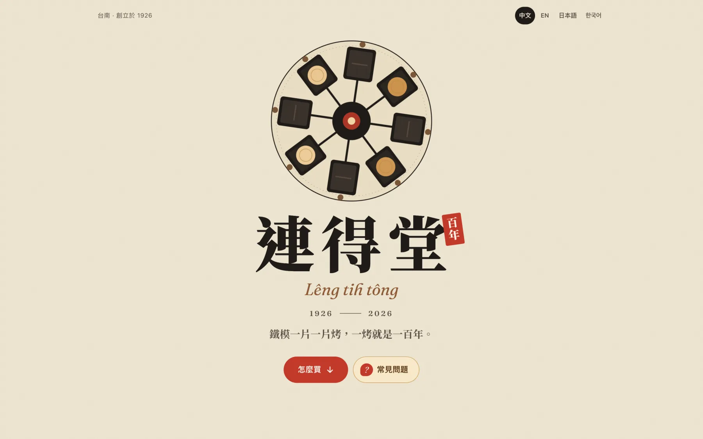
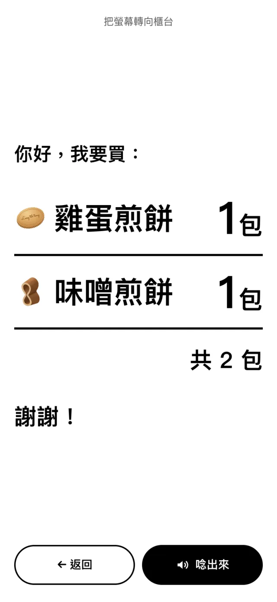
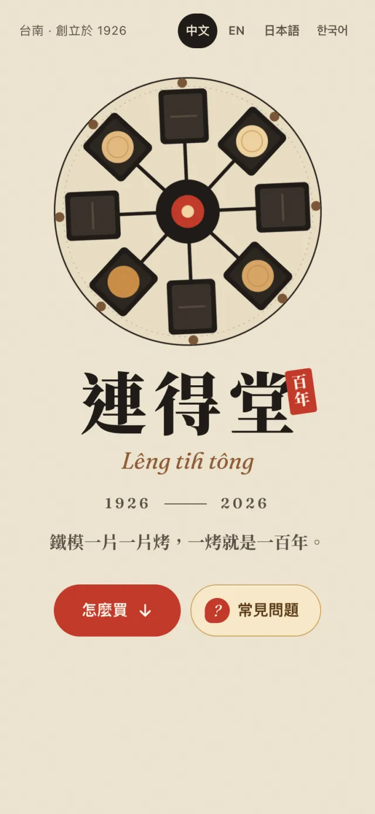
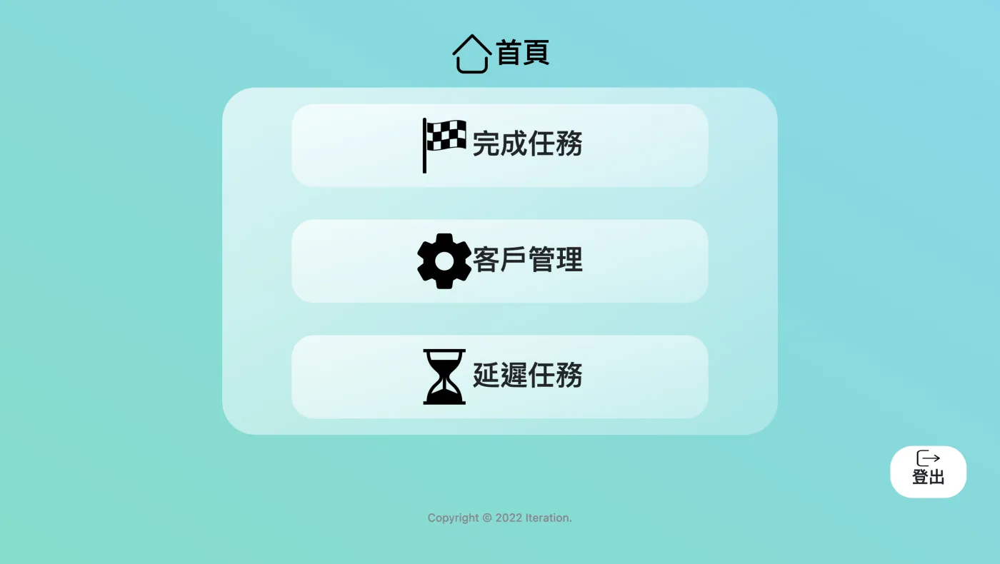
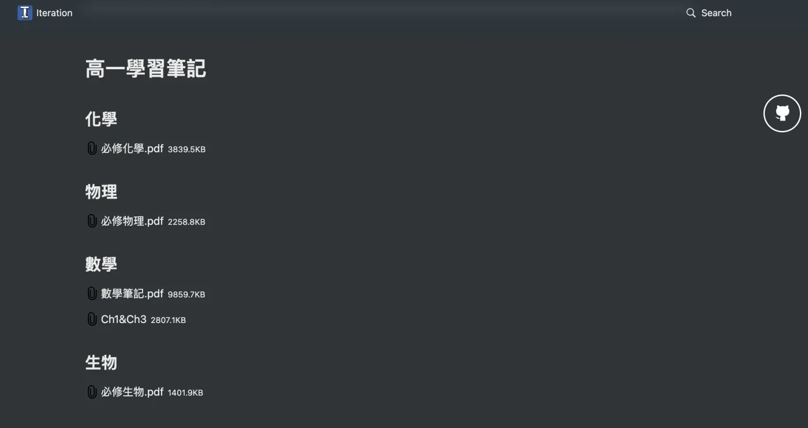
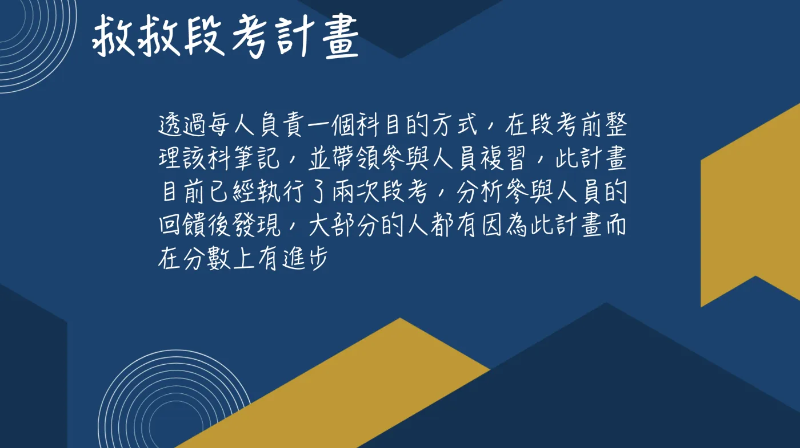
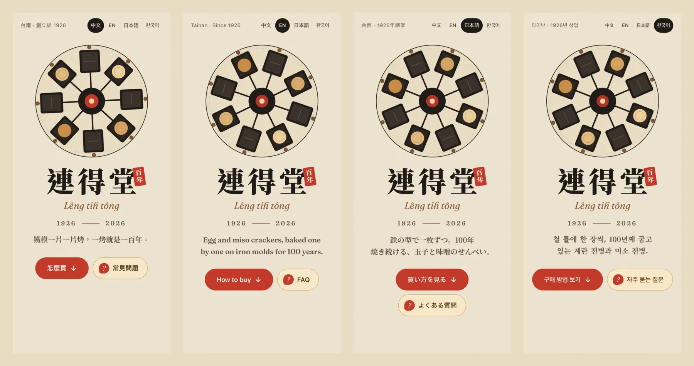
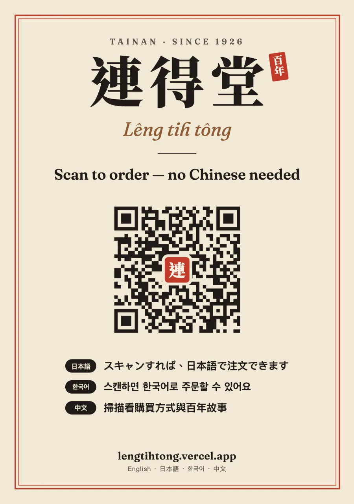

67分鐘
從開工到第一版上線
4種語言
中文、English、日本語、한국어
2天
完成網站、點單卡與可印的 QR 立牌
數字取自連得堂專案的開發紀錄。
精選案例
過去的案子

飲水機保養管理系統
系統整理每月要保養的客戶並匯出 Excel；維護人員在外用手機就能查客戶的名稱、地址和電話，完全取代紙本。
委託：鑫沅淨水

線上學習平台
把整理好的各科筆記依科目放上網站，同學隨時可以線上看、下載。

救救段考計畫
每人負責一科，段考前整理筆記、帶大家複習。執行兩次段考後，多數參與者回饋分數有進步。
我們接什麼案子
從一頁網站到內部系統都接。報價前先把範圍講清楚，做不到的會直接說。
網站與多語系網站
給店家、品牌和活動用。手機優先，依訪客的瀏覽器語言自動切換。

從網站延伸到實體物
QR 立牌、桌卡、印刷用 PDF。產生後自動解碼，確認掃得到。

管理系統與內部工具
把 Excel 和紙本流程搬上網頁，在手機上也能查、能改。
上線後的使用數據
可加上不用 cookie 的流量分析，看得到訪客實際用了哪些功能。
一個案子怎麼進行
每個案子單獨評估、單獨排程。每一步底下是連得堂專案實際的樣子。
-
先研究，再訪談
先查公開資料，再訪談你，把對象、範圍和驗收方式寫清楚。
連得堂：三輪訪談後，把主要對象定為站在店門口的人。
-
先上線第一版
盡快做出能用、有正式網址的版本，讓你直接在手機上試。
連得堂：開工後 67 分鐘第一版上線，之後網址都沒有變。
-
照回饋一輪一輪改
每一輪改完都重新部署，你看到的永遠是最新版。正式上線前都先經過你同意。
連得堂：煎餅圖示改了兩版、區塊順序重排一次，兩天內正式部署 5 次。
-
完整交接
原始碼、開發紀錄、待確認清單一起交給你，之後換人維護也接得上。
連得堂：交付原始碼、開發紀錄、待確認清單、翻譯校對說明與操作示範影片。
AI-native
每個案子，都留下一個能重複用的 skill
我們用 Claude Code 開發。案子做完，就把流程整理成 agent skill：研究步驟、檢查清單、驗證腳本。下一個類似的案子從這裡開始，不必從零來過。
-
shop-visitor-site替老店做多語系導覽網站：資料研究、從包裝取色、給店員看的點單卡、多語系、部署上線。
來自連得堂專案 -
qr-stand產生可直接印的 QR 立牌，配合品牌配色；QR 會縮小解碼，確認掃得到正確網址。
來自連得堂專案
關於 Iteration
Iteration 是「迭代」的意思：每一輪都比上一輪好一點。2022 年，一群一起寫程式的高中生組成了這個團隊；現在我們以新創團隊的形式，一個案子一個案子接。
-
團隊成立
從校園專案開始，寫程式、架網站。
-
第一個委託案
替鑫沅淨水做飲水機保養管理系統。
-
救救段考與線上學習平台
帶同學複習段考，並把筆記放上線上平台。
-
連得堂訪客網站
四種語言的導覽網站與 QR 立牌，用 Claude Code 開發。
-
開放接案
網站、系統、AI 工作流程，一案一議。
說說你的案子
寄信時附上這三件事。我們會先評估適不適合，再回覆一份範圍清楚的報價。
- 想解決什麼問題
- 希望什麼時候上線
- 大概的預算範圍
- 電話
- 0902-115-275